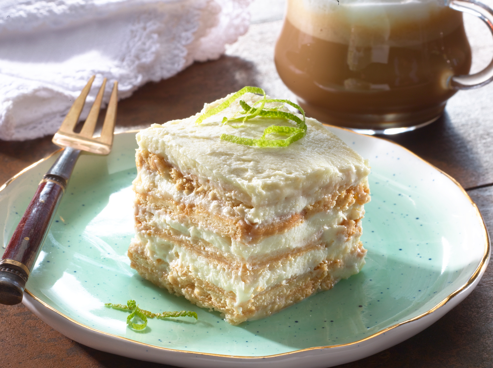

Home
Receta para una rica "Carlota de Limon"

La carlota de limón es un postre cremoso sin horno compuesto por capas de galleta maría y una deliciosa crema de limón. Se sirve muy frío y es ideal para los días de verano. A continuación, la receta paso a paso.
Ingredientes
- 1 Lata leche condensada
- 1/2 Paquete queso crema
- 1/3 Taza jugo de limon
- 20 unidades galleta Maria
- 1/2 cda grande ralladura de limon
- 1 Lata leche evaporada
Preparacion
- Licua la Leche Condensada junto con la Leche Evaporada y el queso, con la licuadora encendido agrega el jugo de limón, reserva.
- Cubre el molde con galletas. Vierte un poco del licuado reservada.
- Coloca una capa de galletas, vierte un poco de la mezcla, repite esta acción hasta terminar con la mezcla. Lleva al frízer por 2 horas. Pasado el tiempo, retira del frízer, decora con la ralladura de limón. sirve.